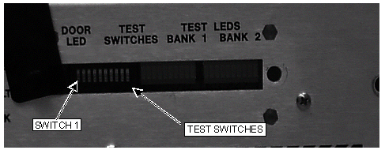

Operating Documentation
Direction 5440001-3, Rev# 6
Signa HDxt Service Methods
Module Version 4.0, Version Date 6/3/10
Operating Documentation |
| Required Persons | Preliminary Reqs | Procedure | Finalization |
|---|---|---|---|
| 1 | Not Applicable | 15 mins | Not Applicable |
This procedure applies to forward production systems with a driver module and upgrades with an SSM.
| NOTE: | The use of the RF Power Measurement Kit to complete the RF Power Monitor Check is highly recommended. |
| Item | Qty | Effectivity | Part# | Manufacturer | |
|---|---|---|---|---|---|
| RF Power Measurement Kit | 1 | - | 46-317724G1 or G2 | - | |
| Laptop serial cable (optional) | 1 | - | 2124497-46 | - | |
| REQUIRED WITHOUT RF POWER MEASUREMENT KIT | 1 | - | 46-255816G1 | - | |
| Composed of : | |||||
| RF Test Cables Kit | 1 | - | 46-255816G1 | - | |
| 50 ohm, 200 Watt, 30 dB attenuator - Bird Model 8322 (If working with RF Power Measurement Kit, only required with G1 Kit. Always required if working without RF Power Measurement Kit.) | 1 | - | 46-255837P10 | - | |
| Oscilloscope | 1 | - | 46-183029P61 | - | |
| Wattmeter and appropriate elements (optional) | 1 | - | Not supplied | - | |
| Condition | Reference | Effectivity |
|---|---|---|
Perform the prerequisite calibration procedures in the sequence listed.1a: Dummy Load & Cables Calibration (Do if NOT using the RF Power Measurement Kit) -- Calibration required whenever using the dummy load and cables. This value will be frequency specific and can change over time. 1b: Scopes with Less Than 300 MHZ Bandwidth (Do if NOT using the RF Power Measurement Kit) This should be done for scopes with bandwidths less than 300 MHz. 2: 1.5T SRF Max Power RF Out Setup and Calibration or 1.5T SRFD2 Max Power RF Out Setup and Calibration At initial installation or when the RFI, UCERD Exciter, or RF Amps are repaired or replaced. | - | - |
Verify that the system is not scanning and that all coils have been removed from the magnet bore.
| ||||
| PROPERTY DAMAGE! TO PREVENT COIL AND ASSOCIATED SWITCH DAMAGE, REMOVE ALL PHANTOMS AND HARDWARE (I.E., HEAD COIL, SURFACE COIL) FROM THE MAGNET BORE. | ||||
Remove the front door from the RF Cabinet.
Set SW2 “TR” to Disable Down position on the Driver Module.
Illustration 1: Driver Module Switches

| NOTE: | (For SSM Only) Step 4 through Step 7 apply only to systems with an SSM. If the SSM has switch cover (p/n 5120058) installed, remove the cover before performing the procedure outlined below. The cover may prevent the power monitor switches from functioning properly. |
(SSM Only) See Illustration 2. On the front of the SSM place the 2 (two) power MONITOR switches (A and B) to the middle BYPASS position.
Illustration 2: SSM Front Panel Switches Disabled

(SSM Only) Remove the test window from the Test Switches and Test LEDS on the front of the SSM. See Illustration 3.
Illustration 3: Inside the Test Window

| NOTE: | Order of DIP switch placement is important otherwise the system will not recognize changes. |
(SSM Only) Place the first four switches (from the left) in the order and positions shown in Table 1 and leave in these positions for the duration of the test.
Table 1: Switch Positions
| Switch Number | Position |
| 1 | UP |
| 2 | UP |
| 3 | DOWN |
| 4 | UP |
(SSM Only) The TEST LED will illuminate. This is the yellow LED to the right of the CAL switch.
If you are using the RF Power Measurement Kit, then calibrate the scope by referring to the RF Power Measurement Kit laminated card set.
Look in the upper right corner of each card and find the card labeled CAL.
Configure the scope as in the illustration on the card.
Follow the directions on the card to calibrate the scope using the 4 dBm calibrator.
If you are not using the RF Power Measurement Kit, then complete the Dummy Load and Cables Calibration procedure in Dummy Load and Cables Calibration. If using the scope to measure the RF output power, then also make sure that the scope correction factor has been determined for the input channel to be used as described in Characterization for Scopes With Less Than 300 MHz Bandwidth.
Continue in the process to SRF Power Monitor Head Hardware Setup And Checks procedure AND/OR SRF Power Monitor Body Hardware Setup And Checks procedure.
No finalization steps.